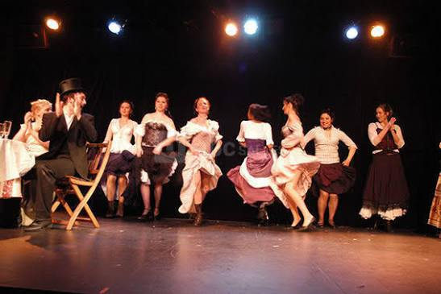

Épanouissement & Service
Une Vie Communautaire Vibrante
Découvrez nos programmes conçus pour glorifier Dieu à travers l'art, l'aventure et la louange.
Camps & Retraites
Des moments hors du temps en pleine nature pour se reconnecter à l'essentiel et fortifier l'amitié fraternelle autour du feu.
Louange & Musique
Nous utilisons nos voix et nos instruments pour célébrer le Créateur avec excellence, passion et créativité.

Arts de la Scène
Exprimer sa foi par le jeu d'acteur. Nos pièces portent des messages d'espoir et de transformation sur le devant de la scène.
Sport & Discipline
Cultiver le respect et l'esprit d'équipe à travers le sport, car le corps est le temple de l'Esprit.